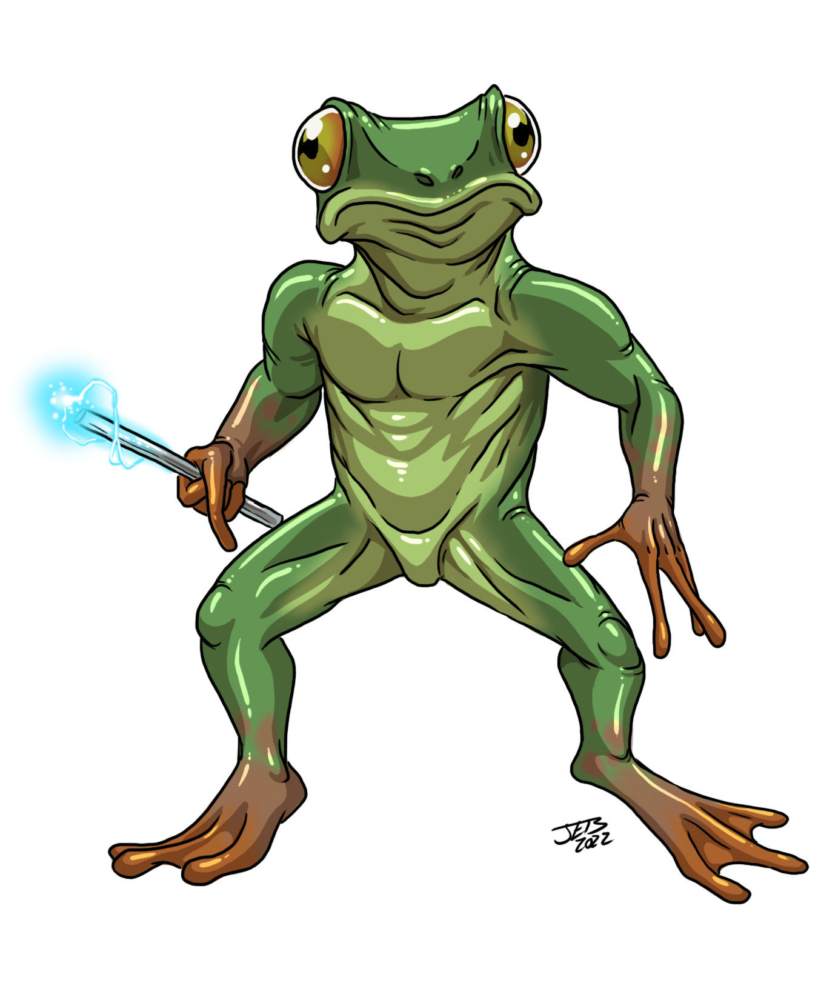
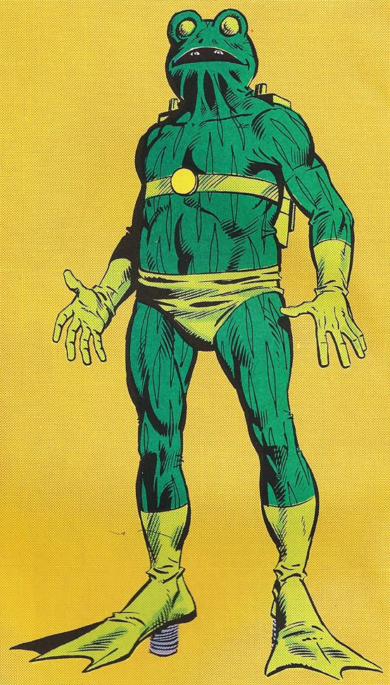
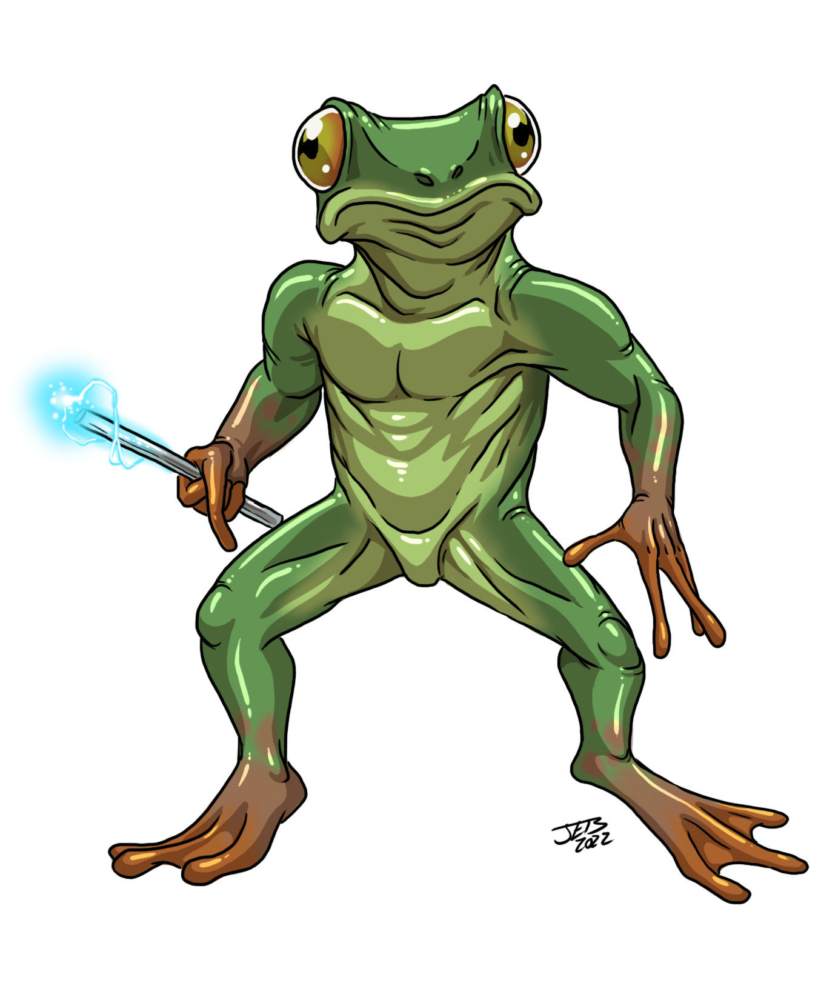
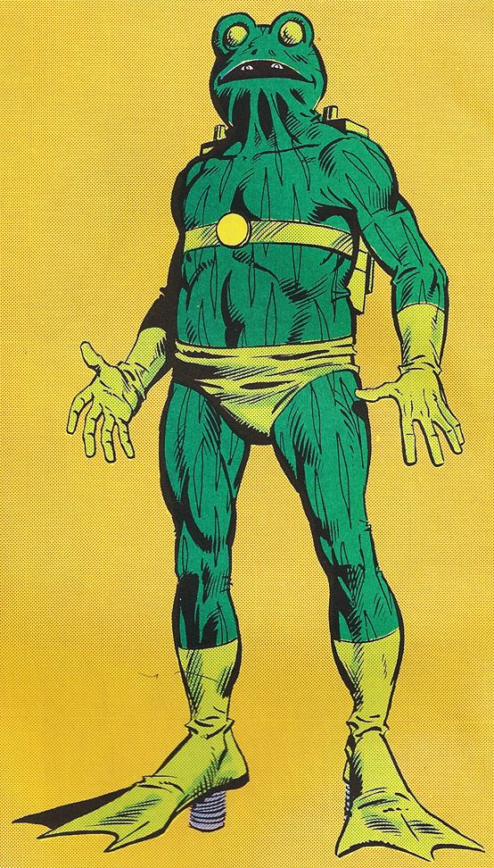

A Little About Frogs
Frogs:
Frogs are amphibians and vertebrates of the order Anura. There is not much difference between frogs and toads, and they are not classified separately.
This is because the toad lifestyle, with its dry, rough, skin, is an adaptation to living in drier habitats. The toad form has evolved a number of times
independently, an example of convergent evolution.
Frogs can live on land and in fresh water. They cannot survive in salt water. Their development is by metamorphosis. They usually hatch as tadpoles
from eggs, which are laid by a female frog. The eggs are called frogspawn. Tadpoles have tails and gills. The next stage, the "froglet," develops lungs to
breathe air instead of gills, but still have tails. The fully grown frog has long legs and no tail.
SOURCE1
SOURCE2
SOURCE3
Click the image below to learn more about frogs!

 



Why frogs are cool
- 1. Most of them are green
- 2. They are sticky
- 3. They eat bugs
- 4. They live outside
Frogs vs Toads (because people don't know the difference!!).
| Frogs | Toads |
|---|
| They are green |
They're like dessert colour |
| Sticky | Clean |
| Begins with "f" |
Begins with "t", like mario toad |